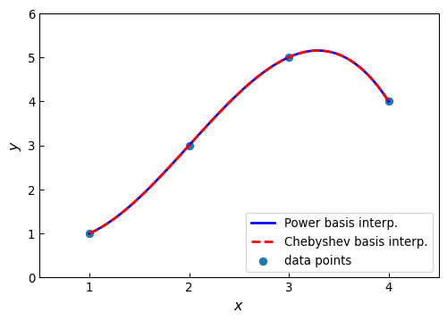
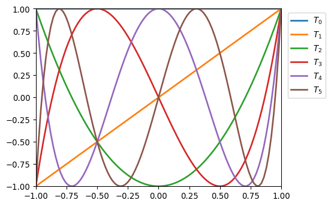
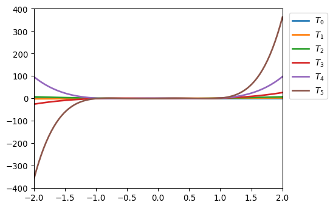
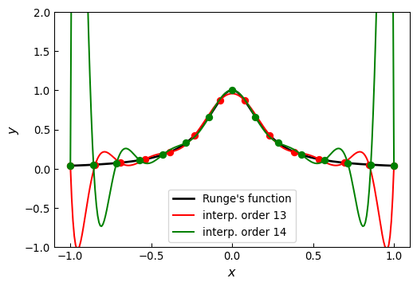
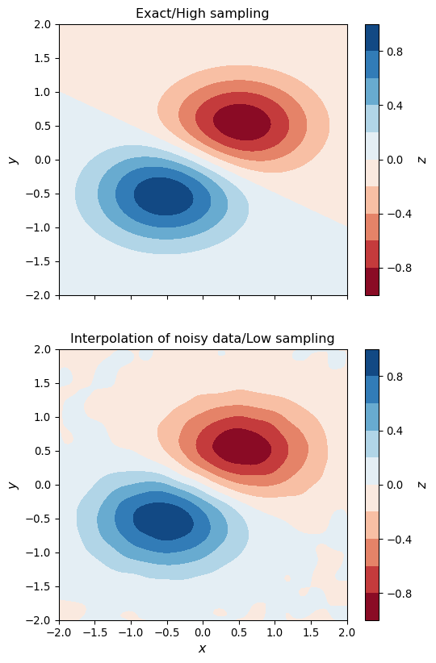
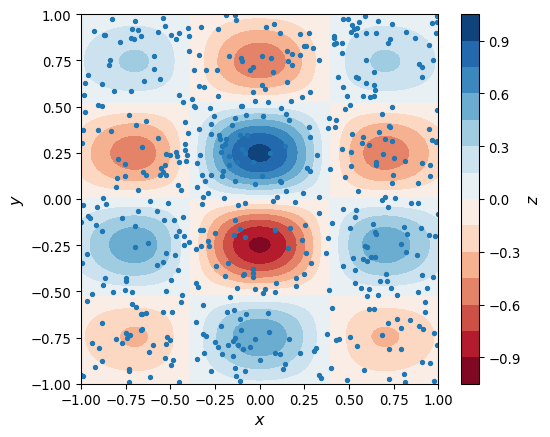
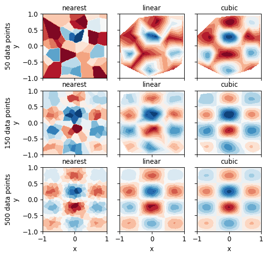

import numpy as np
from numpy import polynomial as P
from scipy import interpolate
from scipy import linalg
import matplotlib as mpl
import matplotlib.pyplot as pltAppendix F — Interpolation
G Interpolation
\(~\)
Interpolation is a mathematical method for constructing a function from a discrete set of data points. To perform interpolation in python, we use the polynomial module from numpy and the interpolate module from scipy
G.1 Importing modules
G.2 Interpolation
One-dimensional interpolation can be formulated as follows:
For a given set of \(n\) data point \(\{ (x_i, y_i) \}_{i=1}^n\), find a function \(f(x)\) such that \(f(x_i) = y_i\) for \(i \in [1, n]\). The function \(f(x)\) is known as the interpolant, and it is not unique
In fact, there are an infinite number of functions that satisfy the interpolation criteria. Typically we can write the interpolant as a linear combination of some basis functions \(\phi_j(x)\), such that
\[ f(x) = \sum_{j=1}^n c_j \phi_j(x) \]
where \(c_j\) are unknown coefficients
Substituting the given data points into this linear combination results in a linear equation system for the unknown coefficients: \(\sum_{j=1}^n c_j \phi_j(x_i) = y_i\)
\[ \begin{pmatrix} \phi_1(x_1) & \phi_2(x_1) & \cdots & \phi_n(x_1) \\ \phi_1(x_2) & \phi_2(x_2) & \cdots & \phi_n(x_2) \\ \vdots & \vdots & \ddots & \vdots\\ \phi_1(x_n) & \phi_2(x_n) & \cdots & \phi_n(x_n) \\ \end{pmatrix} \begin{pmatrix} c_1 \\ c_2 \\ \vdots \\c_n \end{pmatrix} = \begin{pmatrix} y_1 \\ y_2 \\ \vdots \\y_n \end{pmatrix} \]
or in a more compact implicit matrix form as \(\Phi(\mathbf{x}) \mathbf{c} = \mathbf{y}\), where the elements of the matrix \(\Phi(\mathbf{x})\) are \(\Phi(\mathbf{x})_{ij} = \phi_j(x_i)\)
Common choices of basis functions for interpolation are various types of polynomials, for example, the power basis \(\phi_j(x_i) = x_i^{j-1}\), or orthogonal polynomials such as Legendre polynomials \(\phi_j(x_i) = P_{j-1}(x_i)\), Chebyshev polynomials \(\phi_j(x_i) = T_{j-1}(x_i)\), or piecewise polynomials
Note that in general \(f(x)\) is not unique, but for \(n\) data points there is a unique interpolating polynomial of order \(n-1\), regardless of which polynomial basis we use. The structure of the matrix \(\Phi(\mathbf{x})\) is different for different polynomial bases, and its condition number and the computational cost of solving the interpolation problem varies correspondingly
G.3 Polynomials
The
numpylibrary contains the submodulepolynomial(here imported asP), which provides functions and classes for working with polynomials. In particular, it provides implementations of many standard orthogonal polynomialsFor example, we can create a representation of the polynomial
\[1 +2x +3x^2\]
by passing the list
[1, 2, 3]to thePolynomialclass:
p1 = P.Polynomial([1,2,3])
p1\(x \mapsto \text{1.0} + \text{2.0}\,x + \text{3.0}\,x^{2}\)
- In the examples above, the first of the lists
coefis the coefficient array and the second and third lists are thedomainandwindowattributes
p1.coef, p1.domain, p1.window(array([1., 2., 3.]), array([-1., 1.]), array([-1., 1.]))- Alternatively, we can also initialize a polynomial by specifying its roots using the class method
P.Polynomial.fromroots. The polynomial with roots at \(x=-1\) and \(x=1\), for example, can be created using:
p2 = P.Polynomial.fromroots([-1, 1])
p2\(x \mapsto \text{-1.0}\color{LightGray}{ + \text{0.0}\,x} + \text{1.0}\,x^{2}\)
- The roots of a polynomial can be computed using the
rootsmethod
p1.roots()array([-0.33333333-0.47140452j, -0.33333333+0.47140452j])p2.roots()array([-1., 1.])- To evaluate the polynomial
p1at the points \(x=[1.5, 2.5, 3.5]\), we simply call thep1class instance with a list of \(x\) values as this argument:
p1(np.array([1.5, 2.5, 3.5]))array([10.75, 24.75, 44.75])- Consider addition, subtraction, multiplication, and division of the polynomial \(p_1(x) = (x -3)(x -2)(x -1)\) with the polynomial \(p_2(x) = (x -2)\)
p1 = P.Polynomial.fromroots([1, 2, 3])
p2 = P.Polynomial.fromroots([2])p3 = p1 + p2
p3\(x \mapsto \text{-8.0} + \text{12.0}\,x - \text{6.0}\,x^{2} + \text{1.0}\,x^{3}\)
p4 = p1 - p2
p4\(x \mapsto \text{-4.0} + \text{10.0}\,x - \text{6.0}\,x^{2} + \text{1.0}\,x^{3}\)
p5 = p1 * p2
p5\(x \mapsto \text{12.0} - \text{28.0}\,x + \text{23.0}\,x^{2} - \text{8.0}\,x^{3} + \text{1.0}\,x^{4}\)
p6 = p1 // p2
p6\(x \mapsto \text{3.0} - \text{4.0}\,x + \text{1.0}\,x^{2}\)
p6.roots()array([1., 3.])In addition to the
Polynomialclass for polynomials in the standard power basis, thepolynomialmodule also has classes for representing polynomials in Chebyshev, Legendre, Laguerre and Hermite bases, with the namesChebyshev,Legendre,Laguerre,Hermite(Physicists’) andHermiteE(Probabilists’), respectivelyFor example, the Chebyshev polynomial with coefficient list
[1, 2, 3], that is, the polynomial\[ T_0(x) +2T_1(x) +3T_2(x) \]
where \(T_i(x)\) is the Chebyshev polynomial of order \(i\), can be created using:
c1 = P.Chebyshev([1, 2, 3])
c1\(x \mapsto \text{1.0}\,{T}_{0}(x) + \text{2.0}\,{T}_{1}(x) + \text{3.0}\,{T}_{2}(x)\)
c1.roots()array([-0.76759188, 0.43425855])c1 = P.Chebyshev.fromroots([-1, 1])
c1\(x \mapsto \text{-0.5}\,{T}_{0}(x)\color{LightGray}{ + \text{0.0}\,{T}_{1}(x)} + \text{0.5}\,{T}_{2}(x)\)
l1 = P.Legendre.fromroots([-1, 1])
l1\(x \mapsto \text{-0.66666667}\,{P}_{0}(x)\color{LightGray}{ + \text{0.0}\,{P}_{1}(x)} + \text{0.66666667}\,{P}_{2}(x)\)
c1(np.array([-0.5, 0, 1]))array([-0.75, -1. , 0. ])l1(np.array([-0.5, 0, 1]))array([-0.75, -1. , 0. ])G.4 Polynomial interpolation
To solve the interpolation problem, we need to first evaluate the matrix \(\Phi(\mathbf{x})\) for a given basis, and then solve the resulting linear equation system \(\Phi(\mathbf{x}) \mathbf{c} = \mathbf{y}\). Each of the polynomial classes in polynomial provides a function for computing the (generalized) Vandermonde matrix for the corresponding basis
For example, consider the data points \((1,1)\), \((2,3)\), \((3,5)\) and \((4,4)\)
x = np.array([1, 2, 3, 4])
y = np.array([1, 3, 5, 4])To interpolate a polynomial through these points, we need to use a polynomial of third degree (number of data points minus one)
For interpolation in the power basis, we seek the coefficients \(c_i\)’s such that
\[ f(x) = c_1 +c_2 x +c_3 x^2 +c_4 x^3 \]
and to find these coefficients, we evaluate the Vandermonde matrix and solve the interpolation equation system
deg = len(x) -1
A = P.polynomial.polyvander(x, deg)
Aarray([[ 1., 1., 1., 1.],
[ 1., 2., 4., 8.],
[ 1., 3., 9., 27.],
[ 1., 4., 16., 64.]])c = linalg.solve(A, y)
carray([ 2. , -3.5, 3. , -0.5])- The interpolation polynomial is thus \(f(x) = 2 -3.5x + 3x^2 -0.5x^3\)
f1 = P.Polynomial(c)f1(2.5)np.float64(4.1875)- To perform this polynomial interpolation in another polynomial basis, all that we need to change is the name of the function that was used to generate the Vandermonde matrix \(\mathbf{A}\) in the previous example
A = P.chebyshev.chebvander(x, deg)
Aarray([[ 1., 1., 1., 1.],
[ 1., 2., 7., 26.],
[ 1., 3., 17., 99.],
[ 1., 4., 31., 244.]])c = linalg.solve(A, y)
carray([ 3.5 , -3.875, 1.5 , -0.125])The interpolation polynomial in the Chebyshev basis is
\[ f(x) = 3.5 T_0(x) -3.875 T_1(x) +1.5 T_2(x) -0.125 T_3(x) \]
f2 = P.Chebyshev(c)f2(2.5)np.float64(4.1875)xx = np.linspace(x.min(), x.max(), 100)
fig, ax = plt.subplots(1, 1, figsize=(6, 4))
ax.plot(xx, f1(xx), 'b', lw=2, label='Power basis interp.')
ax.plot(xx, f2(xx), 'r--', lw=2, label='Chebyshev basis interp.')
ax.scatter(x, y, label='data points')
ax.legend(loc=4)
ax.tick_params(which='both', direction='in')
ax.set_xlim(0.5, 4.5)
ax.set_ylim(0, 6)
ax.set_xticks(x)
ax.set_ylabel(r"$y$", fontsize=12)
ax.set_xlabel(r"$x$", fontsize=12)
plt.show()
f1b = P.Polynomial.fit(x, y, deg)
f1b\(x \mapsto \text{4.1875} + \text{3.1875}\,\left(\text{-1.66666667} + \text{0.66666667}x\right) - \text{1.6875}\,\left(\text{-1.66666667} + \text{0.66666667}x\right)^{2} - \text{1.6875}\,\left(\text{-1.66666667} + \text{0.66666667}x\right)^{3}\)
f2b = P.Chebyshev.fit(x, y, deg)
f2b\(x \mapsto \text{3.34375}\,{T}_{0}(\text{-1.66666667} + \text{0.66666667}x) + \text{1.921875}\,{T}_{1}(\text{-1.66666667} + \text{0.66666667}x) - \text{0.84375}\,{T}_{2}(\text{-1.66666667} + \text{0.66666667}x) - \text{0.421875}\,{T}_{3}(\text{-1.66666667} + \text{0.66666667}x)\)
\(~\)
- Mapping the interpolation data into the range that is most suitable for a specific basis can significantly improve the numerical stability of the interpolation. For example, using the Chebyshev basis with \(x\) values that are scaled such that \(x \in [-1, 1]\), rather than the original \(x\) values in the previous example, reduces the condition number from almost \(4660\) to about \(1.85\):
np.linalg.cond(P.chebyshev.chebvander(x, deg))np.float64(4659.7384241404425)np.linalg.cond(P.chebyshev.chebvander((2*x -5)/3.0, deg))np.float64(1.8542033440472898)- Note that with
fitmethod, the domain attribute of the resulting instances are automatically set to the appropriate \(x\) values of the data points (in this example, the input range is[1, 4]), and the coefficients are adjusted accordingly. To illustrate the problem, the values of the Chebyshev polynomials up to degree5are plotted below
x = np.linspace(-1, 1, 100)
fig = plt.figure(figsize=(5.5, 4))
for i in range(6):
ax = plt.plot(x, P.Chebyshev.basis(i)(x), lw=2,
label=f'$T_{i}$')
plt.legend(bbox_to_anchor=(1.01, 1.0), loc=2)
plt.xlim(-1, 1)
plt.ylim(-1, 1)
plt.show()
- In the range \(-1 \geq x \geq 1\), they are nice, equiripple functions. The same plots over the range \(-2 \geq x \geq 2\) look very different:
x = np.linspace(-2, 2, 100)
fig = plt.figure(figsize=(5.5, 4))
for i in range(6):
ax = plt.plot(x, P.Chebyshev.basis(i)(x), lw=2,
label=f'$T_{i}$')
plt.legend(bbox_to_anchor=(1.01, 1.0), loc=2)
plt.xlim(-2, 2)
plt.ylim(-400, 400)
plt.show()
High-order polynomial interpolation can have undesirable behavior between the interpolation points. Although the interpolation is exact at the given data points, a high-order polynomial can vary wildly between the specified points
This is famously illustrated by polynomial interpolation of Runge’s function
\[f(x) = \frac{1}{1 + 25x^2}\]
using evenly spaced sample points in the interval \([-1, 1]\). The result is an interpolant that nearly diverges between the data points near the end of the interval
def runge(x):
return 1/(1 + 25*x**2)
def runge_interpolate(n):
x = np.linspace(-1, 1, n +1)
p = P.Polynomial.fit(x, runge(x), deg=n)
return x, pxx = np.linspace(-1, 1, 250)
fig, ax = plt.subplots(1, 1, figsize=(6, 4))
ax.plot(xx, runge(xx), 'k', lw=2, label="Runge's function")
# 13th order interpolation of the Runge function
n = 13
x, p = runge_interpolate(n)
ax.plot(x, runge(x), 'ro')
ax.plot(xx, p(xx), 'r', label=f'interp. order {n}')
# 14th order interpolation of the Runge function
n = 14
x, p = runge_interpolate(n)
ax.plot(x, runge(x), 'go')
ax.plot(xx, p(xx), 'g', label=f'interp. order {n}')
ax.legend(loc=8)
ax.set_xlim(-1.1, 1.1)
ax.set_ylim(-1, 2)
ax.set_xticks([-1, -0.5, 0, 0.5, 1])
ax.set_xlabel(r"$x$", fontsize=12)
ax.set_ylabel(r"$y$", fontsize=12)
ax.tick_params(which='both', direction='in')
G.5 Spline interpolation
For a set of \(n\) data points \(\{ x_i, y_i\}\), there are \(n-1\) subintervals \([x_i, x_{i+1}]\) in the full range of the data \([x_0, x_n]\). To interpolate the \(n\) data points using piecewise polynomials of degree \(k\) on each of the subintervals, we must determine \((k+1)(n-1)\) unknown parameters. The values at the knots give \(2(n-1)\) equations. Additional equations can be obtained by requiring also that derivatives and higher-order derivatives are continuous at the knots
A spline is a special type of piecewise polynomial interpolant: a piecewise polynomial of degree \(k\) is a spline if it is continuously differentiable \(k-1\) times. The most popular choice is the third-order spline, \(k=3\), which requires \(4(n-1)\) parameters
For this case, the continuity of two derivatives at the \(n-2\) knots gives \(2(n-2)\) additional equations, bringing the total number of equations to \(2(n-1) +2(n-2) = 4(n-1) -2\)
There are therefore two remaining undetermined parameters, which must be determined by other means. A common approach is to additionally require that the second order derivatives at the end points are zero (resulting in the natural spline). This gives two more equations, which closes the equation system
x = np.linspace(-1, 1, 11)
xx = np.linspace(-1, 1, 100)
y = runge(x)
f_i = interpolate.interp1d(x, y, kind=3)
fig, ax = plt.subplots(figsize=(6, 4))
ax.plot(x, y, 'ro', label='Sample points')
ax.plot(xx, runge(xx), 'k', lw=1, label="Runge's function")
ax.plot(xx, f_i(xx), 'r--', lw=2, label='Spline order 3')
ax.legend()
ax.set_xlim(-1, 1)
ax.set_ylim(0, 1.2)
ax.set_xticks([-1, -0.5, 0, 0.5, 1])
ax.set_xlabel(r"$x$", fontsize=12)
ax.set_ylabel(r"$y$", fontsize=12)
ax.tick_params(which='both', direction='in')
plt.show()To illustrate the effect of the order of a spline interpolation, consider the problem of interpolating the data
\[ (0,3), (1,4), (2,3.5), (3,2), (4,1), (5,1.5), (6,1.25) \text{ and } (7,0.7) \]
with splines of increasing order
x = np.array([0, 1, 2, 3, 4, 5, 6, 7])
y = np.array([3, 4, 3.5, 2, 1, 1.5, 1.25, 0.7])
xx = np.linspace(x.min(), x.max(), 100)
fig, ax = plt.subplots(figsize=(6, 4))
ax.scatter(x, y)
for n in [1, 2, 3, 7]:
f = interpolate.interp1d(x, y, kind=n)
ax.plot(xx, f(xx), label='order %d' % n)
ax.legend()
ax.set_xlabel(r"$x$", fontsize=12)
ax.set_ylabel(r"$y$", fontsize=12)
ax.tick_params(which='both', direction='in')G.6 Multivariate interpolation
def f(x, y):
return (np.exp(-(x +0.5)**2 -2*(y +0.5)**2)
-np.exp(-(x -0.5)**2 -2*(y -0.5)**2))
x = y = np.linspace(-2, 2, 20)
X, Y = np.meshgrid(x, y)
# simulate noisy data at fixed grid points X, Y
Z = f(X, Y) +0.01 *np.random.randn(*X.shape)
f_i = interpolate.RectBivariateSpline(x, y, Z)
xx = yy = np.linspace(x.min(), x.max(), 100)
XX, YY = np.meshgrid(xx, yy)
ZZi = f_i(xx, yy)fig, axes = plt.subplots(2, 1, figsize=(6, 10), sharex=True)
c = axes[0].contourf(XX, YY, f(XX, YY), 10, cmap=plt.cm.RdBu)
axes[0].set_ylabel(r"$y$", fontsize=12)
axes[0].set_title("Exact/High sampling")
cb = fig.colorbar(c, ax=axes[0])
cb.set_label(r"$z$", fontsize=12)
c = axes[1].contourf(XX, YY, ZZi, 10, cmap=plt.cm.RdBu)
axes[1].set_ylim(-2, 2)
axes[1].set_xlim(-2, 2)
axes[1].set_xlabel(r"$x$", fontsize=12)
axes[1].set_ylabel(r"$y$", fontsize=12)
axes[1].set_title("Interpolation of noisy data/Low sampling")
cb = fig.colorbar(c, ax=axes[1])
cb.set_label(r"$z$", fontsize=12)
For higher-dimensional problems, there is a function
interpolate.interpnd, which is a generalization to \(n\)-dimensional problemsAnother typical situation that requires multivariate interpolation occurs when sampled data is given on an irregular coordinate grid. To be able to easily plot and analyze such data with existing tools, it may be desirable to interpolate it onto a regular coordinate grid. In
scipy, we can use theinterpolate.griddatafor exactly this task
def f(x, y):
return np.exp(-x**2 -y**2) *np.cos(4*x) *np.sin(6*y)
x = y = np.linspace(-1, 1, 100)
X, Y = np.meshgrid(x, y)
Z = f(X, Y)
np.random.seed(115925231)
N = 500
xdata = np.random.uniform(-1, 1, N)
ydata = np.random.uniform(-1, 1, N)
zdata = f(xdata, ydata)fig, ax = plt.subplots(figsize=(6, 5))
c = ax.contourf(X, Y, Z, 15, cmap=plt.cm.RdBu);
ax.scatter(xdata, ydata, marker='.')
ax.set_ylim(-1, 1)
ax.set_xlim(-1, 1)
ax.set_xlabel(r"$x$", fontsize=12)
ax.set_ylabel(r"$y$", fontsize=12)
cb = fig.colorbar(c, ax=ax)
cb.set_label(r"$z$", fontsize=12)
def z_interpolate(xdata, ydata, zdata):
Zi_0 = interpolate.griddata((xdata, ydata),
zdata, (X, Y), method='nearest')
Zi_1 = interpolate.griddata((xdata, ydata),
zdata, (X, Y), method='linear')
Zi_3 = interpolate.griddata((xdata, ydata),
zdata, (X, Y), method='cubic')
return Zi_0, Zi_1, Zi_3
fig, axes = plt.subplots(3, 3, figsize=(6, 6),
sharex=True, sharey=True)
n_vec = [50, 150, 500]
for idx, n in enumerate(n_vec):
Zi_0, Zi_1, Zi_3 = z_interpolate(xdata[:n],
ydata[:n],
zdata[:n])
axes[idx, 0].contourf(X, Y, Zi_0, 15, cmap=plt.cm.RdBu)
axes[idx, 0].set_ylabel(f'{n} data points\ny', fontsize=10)
axes[idx, 0].set_title("nearest", fontsize=10)
axes[idx, 1].contourf(X, Y, Zi_1, 15, cmap=plt.cm.RdBu)
axes[idx, 1].set_title("linear", fontsize=10)
axes[idx, 2].contourf(X, Y, Zi_3, 15, cmap=plt.cm.RdBu)
axes[idx, 2].set_title("cubic", fontsize=10)
for m in range(len(n_vec)):
axes[idx, m].set_xlabel("x", fontsize=10)